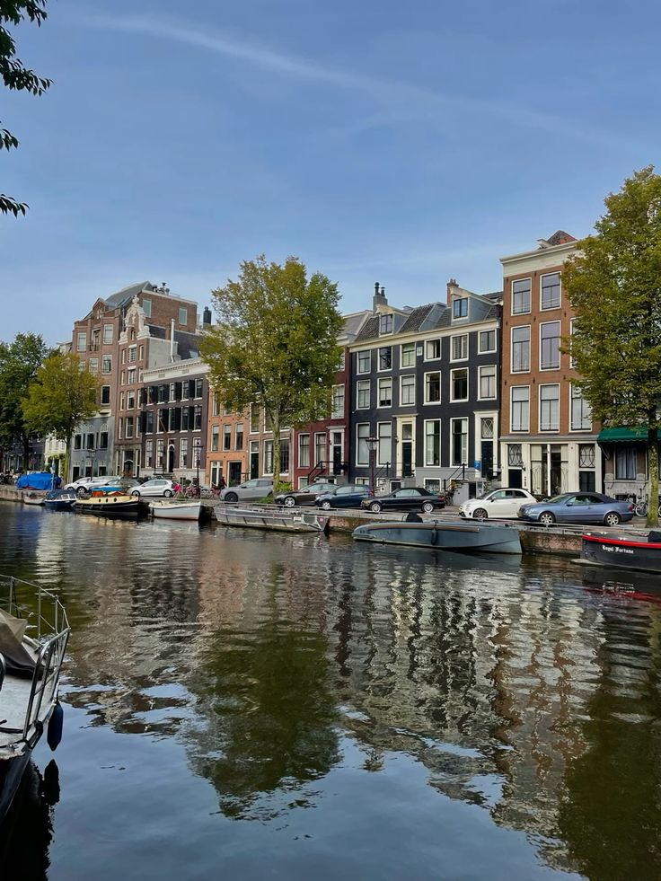
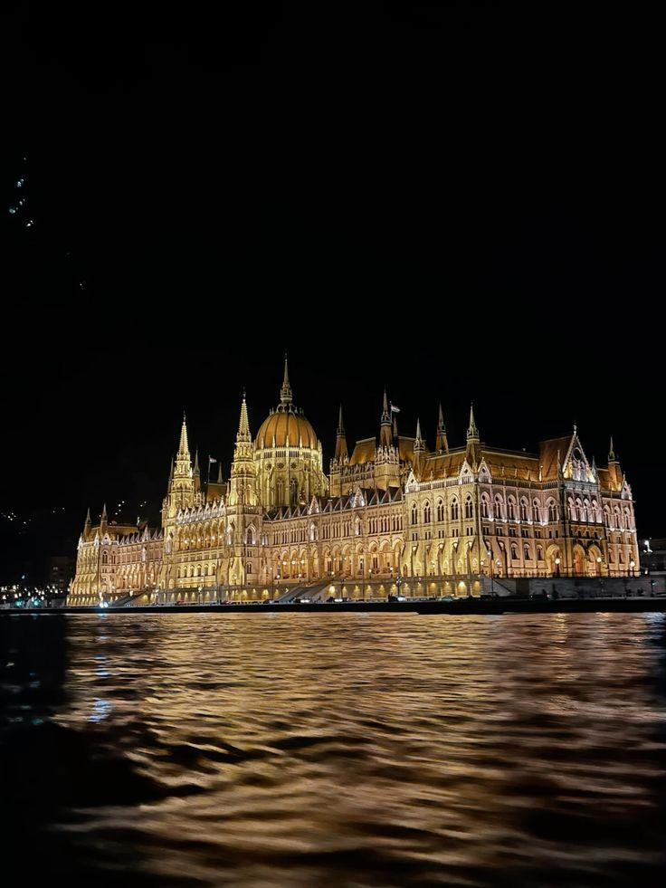

🌍 Avrupa Gezi Günlüğüm
🇪🇸 İspanya'nın Büyüsü: Barcelona, Madrid ve Granada
Ziyaret Tarihi: Haziran 2024
İspanya seyahatim, Barcelona'nın büyüleyici mimarisi, Madrid'in canlı
atmosferi ve Granada'nın Endülüs mirasıyla dolu sokaklarında geçti.
Gaudi'nin eserlerinden flamenko gösterilerine, tapas barlarından tarihi
sarayların ihtişamına kadar İspanya'nın zengin kültürünü deneyimleme
fırsatı buldum.
Unutulmaz Deneyimler:
-
Barcelona'da: Sagrada Familia'nın büyüleyici
mimarisi, Park Güell'in renkli mozaikleri ve La Boqueria pazarında
yerel lezzetlerin tadını çıkarmak
-
Madrid'de: Prado Müzesi'nde sanat şaheserleri, Retiro
Parkı'nda gondol gezisi ve San Miguel pazarında tapas keyfi
-
Granada'da: El Hamra Sarayı'nın görkemli bahçeleri ve
Sacromonte mahalesinde otantik flamenko gösterisi
Detaylı İspanya gezi rehberi için
İspanya resmi turizm portalını
ziyaret edebilirsiniz.
🇮🇹 İtalya'nın Kalbi: Roma, Venedik ve Floransa
Ziyaret Tarihi: Eylül 2023
İtalya gezim, antik Roma'nın ihtişamından Rönesans'ın sanatsal mirasına,
Venedik'in romantik kanallarından Toskana'nın üzüm bağlarına uzanan
muhteşem bir yolculuğa dönüştü. Her şehirde İtalyan mutfağının benzersiz
lezzetlerini ve zengin tarihini keşfettim.
Şehir Şehir İtalya:
-
Roma'da:
- Antik Roma'nın kalbi: Colosseum ve Forum Romanum
- Vatikan Müzeleri ve Sistine Şapeli'nin görkemi
- Pantheon ve çevresindeki tarihi meydanlar
-
Venedik'te:
- San Marco Meydanı ve Bazilika'sı
- Rialto Köprüsü ve Grand Canal turu
- Murano Adası'nda cam yapım atölyeleri
-
Floransa'da:
- Uffizi Galerisi'nde Rönesans başyapıtları
- Duomo Katedrali'nin muhteşem kubbesi
- Ponte Vecchio üzerinde gün batımı
İtalya seyahat planlaması için
İtalya turizm portalını
inceleyebilirsiniz.
🇨🇭 İsviçre'nin Zirveleri
Ziyaret Tarihi: Ağustos 2022
İsviçre'deki deneyimim, Alpler'in görkemli zirvelerinden kristal
berraklığındaki göllere, şık şehirlerden sakin köylere uzanan muhteşem
bir yolculuktu. Doğanın ve şehir yaşamının mükemmel uyumunu gözlemledim.
İsviçre Maceralarım:
-
Zermatt: Matterhorn manzarasında kahvaltı ve dağ
yürüyüşleri
- Luzern: Tarihi ahşap köprüler ve göl turu
-
Interlaken: Paraşütle atlayış ve Jungfraujoch
ziyareti
🇦🇹 Avusturya'nın Klasik Güzellikleri
Ziyaret Tarihi: Eylül 2024
Avusturya'da klasik müziğin, imperial mimarinin ve Alp kültürünün
izlerini sürdüm. Viyana'nın cafe kültürü, Salzburg'un müzikal mirası ve
Innsbruck'un dağ manzaraları beni büyüledi.
Avusturya'da Keşifler:
-
Viyana: Opera binası, Belvedere Sarayı ve ünlü Sacher
pastası
-
Salzburg: Mozart'ın evi, Hohensalzburg Kalesi ve
Sound of Music turları
-
Hallstatt: Dünyanın en güzel göl kenarı köyünde tekne
turu
🇩🇪 Almanya: Tarih ve Modernite
Ziyaret Tarihi: Ekim 2024
Almanya seyahatimde tarihi yapılar, modern sanat galerileri ve Bavyera
kültürünün sıcaklığını deneyimledim. Berlin'in canlı sanat sahnesinden
Münih'in geleneksel bira bahçelerine uzanan renkli bir yolculuk oldu.
Almanya'da Görülmesi Gerekenler:
-
Berlin'de:
- East Side Gallery ve Berlin Duvarı tarihi
- Museum Island'da dünya klasikleri
- Reichstag binası ve modern mimari
-
Münih'te:
- Oktoberfest deneyimi
- BMW Müzesi ve Olimpiyat Parkı
- Nymphenburg Sarayı
🇳🇱 Hollanda: Kanallar ve Lale Ülkesi
Ziyaret Tarihi: Nisan 2024


Hollanda'da bisiklet kültürü, tarihi kanal evleri ve renkli lale
tarlaları arasında muhteşem bir bahar geçirdim. Amsterdam'ın sanat
müzeleri ve Rotterdam'ın modern mimarisi beni etkiledi.
Hollanda'da Yaşadıklarım:
-
Amsterdam: Van Gogh Müzesi, Anne Frank'ın evi ve
kanal turu
-
Keukenhof: Dünyanın en büyük lale bahçelerinde
fotoğraf çekimi
-
Zaanse Schans: Geleneksel yel değirmenleri ve peynir
yapım atölyeleri
🇫🇷 Fransa: Sanat ve Romantizm
Ziyaret Tarihi: Haziran 2022
Fransa'daki seyahatim Paris'in romantik sokaklarından, Loire Vadisi'nin
şatolarına ve Provence'ın lavanta tarlalarına uzanan büyüleyici bir
yolculuk oldu. Fransız mutfağının incelikleri ve sanat galerilerinin
zenginliği beni derinden etkiledi.
Fransa'da Yaşadığım Deneyimler:
-
Paris'te:
- Louvre Müzesi'nde sanat şaheserleri
- Seine nehri üzerinde akşam yemeği cruise'u
- Montmartre'da sokak ressamları ile sohbet
-
Loire Vadisi: Chambord ve Chenonceau şatolarını keşif
-
Provence: Lavanta tarlaları fotoğraf turu ve yerel
pazarlar
🇬🇷 Yunanistan: Antik Dünya'nın İzinde
Ziyaret Tarihi: Haziran 2024
Yunanistan seyahatim, antik tarihin izlerini sürdüğüm, muhteşem
plajlarda dinlendiğim ve yerel mutfağın tadını çıkardığım unutulmaz bir
deneyime dönüştü. Atina'nın tarihi atmosferi ve Yunan adalarının eşsiz
güzelliği beni büyüledi.
Yunanistan'da Keşiflerim:
-
Atina:
- Akropolis ve Parthenon tapınağı ziyareti
- Plaka'nın tarihi sokaklarında yürüyüş
- Ulusal Arkeoloji Müzesi
-
Santorini:
- Oia'da meşhur günbatımı seyri
- Volkanik plajlarda yüzme
- Yerel şarap tadımı
🇨🇿 Çekya: Orta Avrupa'nın Masalsı Şehri
Ziyaret Tarihi: Temmuz 2024
Çekya'da geçirdiğim zaman, Orta Çağ mimarisinin en güzel örneklerini
keşfettiğim, zengin bir bira kültürünü deneyimlediğim ve masalsı
kaleleri gezdim bir maceraya dönüştü. Prag'ın gotik kulelerinden Český
Krumlov'un romantik sokaklarına uzanan muhteşem bir yolculuk oldu.
Çekya Deneyimlerim:
-
Prag'da:
- Astronomik Saat ve Eski Şehir Meydanı
- Prag Kalesi ve St. Vitus Katedrali
- Geleneksel Çek birahanelerinde akşam yemeği
-
Český Krumlov: UNESCO koruması altındaki ortaçağ
şehrinde gezinti
-
Karlovy Vary: Tarihi kaplıcalar ve kolonad yapıları
🇭🇺 Macaristan: Tuna'nın İncisi
Ziyaret Tarihi: Ağustos 2024


Macaristan gezim, Budapeşte'nin görkemli yapıları, tarihi termal
kaplıcaları ve zengin mutfak kültürü ile unutulmaz bir deneyime dönüştü.
Tuna Nehri'nin iki yakasında uzanan şehrin romantik atmosferi beni
derinden etkiledi.
Macaristan'da Yaşadıklarım:
-
Budapeşte'de:
- Balıkçı Tabyası ve Matthias Kilisesi
- Széchenyi Termal Kaplıcası'nda rahatlama
- Tuna Nehri'nde gece cruise'u
-
Szentendre: Sanatçılar şehrinde el sanatları
alışverişi
- Eger: Tarihi şarap mahzenlerinde şarap tadımı


.jpeg)


.jpeg)
.jpeg)

.jpeg)

.jpeg)